鹿寄せに行ってきました [備忘録]
相変わらずブラシが嫌いな梅吉さん。
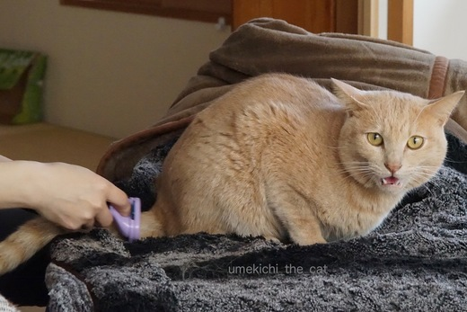
ブラシをしている間ずっと文句を言いつづけ・・・
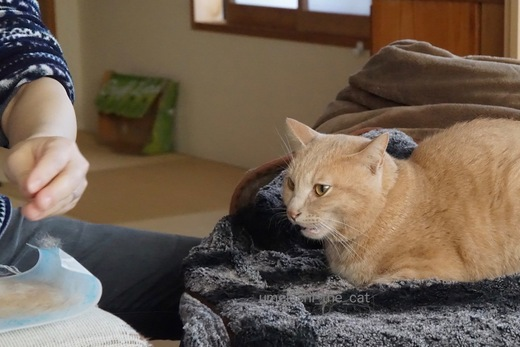
ブラシをしていない間も文句を言いつづけ・・・
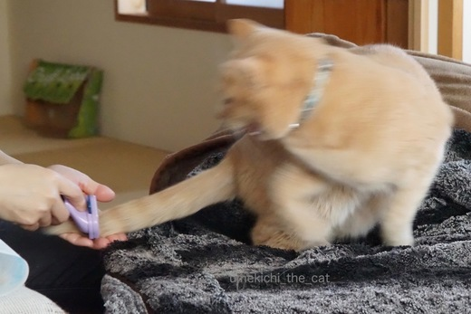
![[猫]](https://blog.ss-blog.jp/_images_e/101.gif) やめんかいっ
やめんかいっ![[むかっ（怒り）]](https://blog.ss-blog.jp/_images_e/152.gif)
ほんの短い時間なのにねー。そんなに怒らなくてもいいじゃない。
でもそろそろ換毛期。怒られてもブラシはしますよ！
そんな怒りん坊の梅吉さんに留守番を頼んで奈良にお出かけ。
奈良公園の冬の恒例行事鹿寄せに行ってきました。
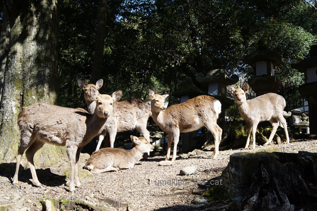
お日様が当たると春のぬくもり。みんな気持ち良さそうです。
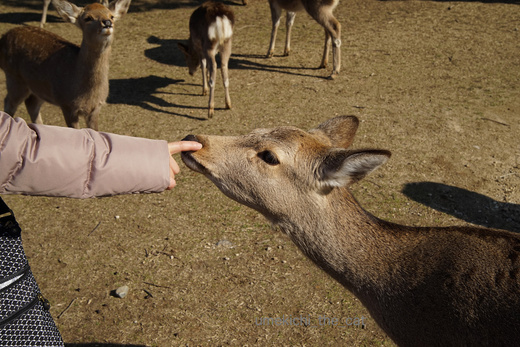
鹿さんとワタクシの触れ合い・・・
鼻に指を入れているのではありません。笑
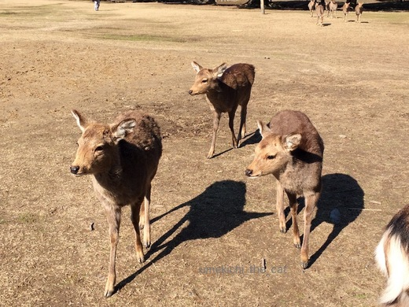
鹿愛護会の人が姿を見せて観光客も集まってくると
「そろそろ時間やな！」と鹿さんも集まってきます。
で、鹿寄せってなによ、と思っている方、こちらの動画をどうぞー。
(音が出ますよ！）
慶次などに春日の神様のお使いの鹿をあつめる鹿寄せ。
本来は有料なのですが
観光客が減る冬の間は期間限定で無料の鹿寄せが行われています。
奈良の鹿愛護会の方がナチュラルホルンを吹くと
春日のお山からどどどどどど〜っと鹿が走ってやってきます。
集まってくれたご褒美はどんぐりと鹿せんべい。
（始まる前からどんぐりをねだっているちゃっかりさんも多数。）
募金も行なっていて奈良の鹿保護のために使われます。
出遅れた！と焦ってやってくる鹿もいたりしてかわいいのよ。
油断していると後ろから頭突きされるけどねw
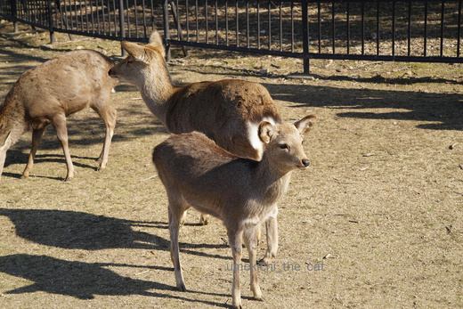
ちっさい子もいました。
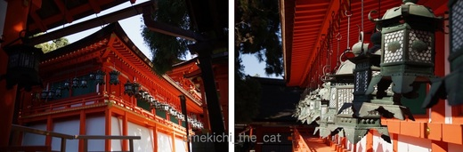
最後は春日の神様にご挨拶。
式年造替が終わって間もない御神殿はますますフォトジェニックでした。
 ↑ガブッと一押し↑
↑ガブッと一押し↑
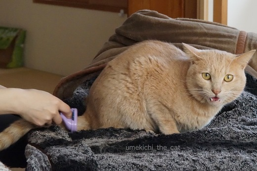
ブラシをしている間ずっと文句を言いつづけ・・・
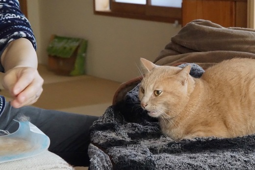
ブラシをしていない間も文句を言いつづけ・・・
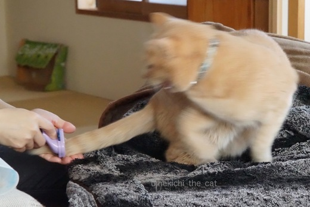
ほんの短い時間なのにねー。そんなに怒らなくてもいいじゃない。
でもそろそろ換毛期。怒られてもブラシはしますよ！
そんな怒りん坊の梅吉さんに留守番を頼んで奈良にお出かけ。
奈良公園の冬の恒例行事鹿寄せに行ってきました。
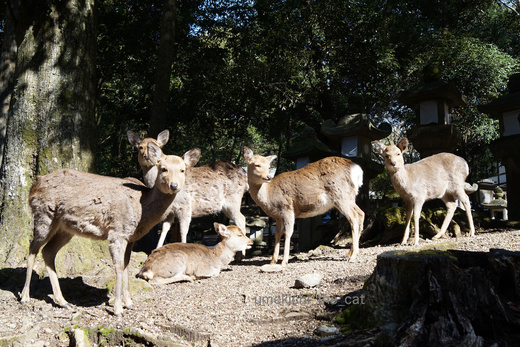
お日様が当たると春のぬくもり。みんな気持ち良さそうです。
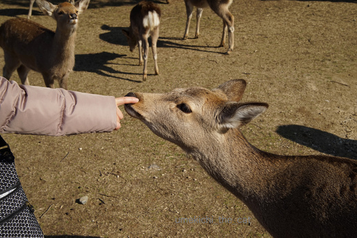
鹿さんとワタクシの触れ合い・・・
鼻に指を入れているのではありません。笑
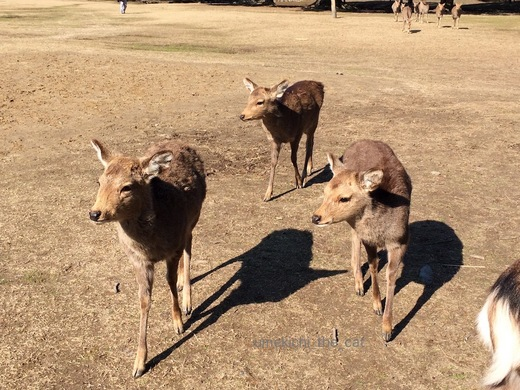
鹿愛護会の人が姿を見せて観光客も集まってくると
「そろそろ時間やな！」と鹿さんも集まってきます。
で、鹿寄せってなによ、と思っている方、こちらの動画をどうぞー。
(音が出ますよ！）
慶次などに春日の神様のお使いの鹿をあつめる鹿寄せ。
本来は有料なのですが
観光客が減る冬の間は期間限定で無料の鹿寄せが行われています。
奈良の鹿愛護会の方がナチュラルホルンを吹くと
春日のお山からどどどどどど〜っと鹿が走ってやってきます。
集まってくれたご褒美はどんぐりと鹿せんべい。
（始まる前からどんぐりをねだっているちゃっかりさんも多数。）
募金も行なっていて奈良の鹿保護のために使われます。
出遅れた！と焦ってやってくる鹿もいたりしてかわいいのよ。
油断していると後ろから頭突きされるけどねw
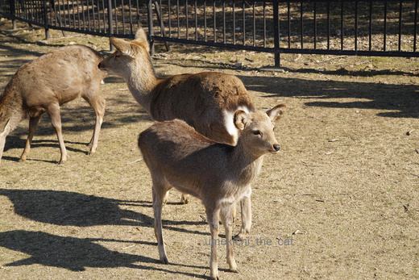
ちっさい子もいました。
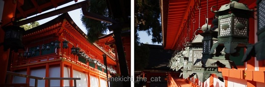
最後は春日の神様にご挨拶。
式年造替が終わって間もない御神殿はますますフォトジェニックでした。

カフェオレ色の梅吉

梅吉 2023年8月10日 永眠


梅吉と出会った譲渡会

犬猫の理由なき殺処分ゼロ
妄想広告
UMEKICHI 光

爆発的に早い！
時々攻撃的！
Thanks to Mr.Boss365
爆発的に早い！
時々攻撃的！
Thanks to Mr.Boss365

あ～梅吉さんの不満の声が聞こえてきそう(^▽^;)
ウチはいきなり梅吉さん３枚目の写真「やめんかい！」になります。
本当に嫌みたいで換毛期は悩みの種。
コロコロでは表面に浮いた毛しか取れませんのでね・・・。
オモチャや猫父にガブガブ噛みついている隙に、後ろからシャシャッとファミネータで２～３回が限界です^^;
by ゆきち (2017-02-19 16:59)
文句言ってもブラシできるならエライよ！
奈良の鹿には修学旅行で襲われた忌わしい記憶が(・Д・)
by じゅらまろ (2017-02-19 18:39)
ゆづはシリコンブラシ大好きです。
しっぽが無いので…というか、短くてブラシが出来ないので
身体だけなんですけど(^^;
鹿さん達も換毛期かな？毛が浮いているように見えますね。
by も〜 (2017-02-19 18:51)
梅吉さん♪
文句言ってますねぇ～（笑
鹿寄せ！！初めて知りました♪
奈良は小学生の修学旅行以来なので
行きたくなってきました(#^.^#)
by きぃ (2017-02-19 20:50)
梅吉さん、猛抗議してますね～。^^)
怒らないブラシの材質は何か？といろいろ試したことがありましたが、結局フツーの金ブラシで落ち着くことになりました。^^;
鹿さん、この時期は角は無いのかな？
by yes_hama (2017-02-19 21:28)
換毛期は悩みの種でしょうね〜
集めた抜け毛で、
飼い猫とそっくりな小さいぬいぐるみを作っている人を見ましたよ〜
by kiki (2017-02-19 21:57)
文句言ってますねぇ(⌒-⌒; )
うちもブラッシングが嫌いですが、かみさんだと諦めて我慢してますw
ただかなり悲壮感が漂うので換毛期しかブラッシングできませんがw
by ニッキー (2017-02-19 22:12)
しっぽのブラッシングは絶対嫌がりますね。ロッキーも今までしたことないです。首回りは気持ちよさそうにしてるのですが下半身に近づくごとに顔がムキってきます。
by みぃにゃん (2017-02-19 22:24)
文句をいう梅吉さんより、ちぃさんの手の美しさにうっとり(笑)
うちの長女もホルン吹いてますが、家で吹いたらきっと、にゃんこ
達は逆に逃げてく気がします(^-^;
by でんさん (2017-02-19 23:49)
梅吉さんブラッシング嫌いなんですねーｗ
うちの猫達も嫌いですね。
嫌がってもやりますけどねぇヽ(*´∀｀)ノ
by sumi-cyan (2017-02-19 23:54)
梅吉さん怒りながらもカメラ目線ですね＾＾
うちは寝ぼけているときに爪切りやブラシをしちゃいます。
グーパーしたりするので寝ぼけ時のブラッシングは気持ちいいみたいです＾＾
鹿寄せ日本にいる頃TVで見た記憶があります。
生で見たらすごい迫力でしょうね＾＾
by Moon (2017-02-20 06:24)
元奈良県民の私ですが、これはちゃんと見たことないんですー(^_^;)
by よーちゃん (2017-02-20 08:32)
奈良に行ってきたのですねー^^
春日大社！
わたしは上野の展覧会で参拝でしたわ(笑)
ブラッシングで文句を言っている梅吉君。
いい顔だなあ〜〜〜
やっぱりね、猫のスカした顔も良いけど、こういう悪顔好きｗｗ
by リュカ (2017-02-20 10:06)
ゆきちさん＞猫父さんにガブガブしている隙に・・・笑、笑。
猫父さん体張っていらっしゃいますね！
ブラシにコロコロ・・・・にゃんこのお手入れの悩みはつきませんねー。
このままブラシが嫌いだと
換毛期には砂漠に転がるタンブルウィードの猫毛版が
見られそうな我が家です( ･̆ˍ･̆ )
じゅらまろさん＞小柄な女性や子供が鹿に襲われやすいようで・・・
以前は私もよく服を引っ張られたり後ろから頭突きされていましたが
この頃は鹿せんべいを持った小柄なアジア人観光客が（ガードが甘い）
私の身代わりになってくれてます^^
も〜さん＞ブラシが好きだなんてうらやましい。
ボーボーの頬毛もOKなのよね。どうりでゆづくんすっきり男前のはずだわ！
鹿さんの毛、
写真じゃわかりにくいけど毛の浮き方が三角柱状のアポロチョコ（くるさん風）
みたいになっているの。
多分仲間にかじられて出来た毛の浮きじゃないかと・・・
鹿の世界も大変そうよ！
きぃさん＞毛が生えた四つ足動物が大好きな私にとって
奈良（奈良公園周辺）は魅力的な所です！
鹿は見ているだけで楽しいのにホルンを吹いたら走ってくるなんてねー。
健気でかわいいなぁとニヤニヤです。
公園周辺は夕方になるとムササビも飛ぶらしい。
一度見てみたいなと思っています。
yes_hamaさん＞毛足の長いアズくんの好きなブラシがあって良かった！
梅吉に怒られながらも１〜２分はブラシできるので
毎日ブラシすることで換毛期を乗り切ろうと思っています。
鹿さんは鹿同士の喧嘩でお互いを傷つけたり
観光客とのトラブルにならないように
10月ごろに角を切っちゃうのです。（角切りという行事もあり）
今は短いけれどこれからニョキニョキ伸びてくるんですよー。
kikiさん＞はい。あのフェルト細工のようなのですね！
いいな〜と思っているのですが・・・・
この換毛期からジップロックに抜け毛をためて行こうかな。
それなりの大きさのものが作れるくらいためるには３〜４年かかりそうです＾＾
ニッキーさん＞大好きなゴッドマザー様がブラシしてくれているんだから・・・
と一生懸命我慢する４にゃんさんの顔が目に浮かびますよ！笑
４にゃんさんもいると換毛期の抜け毛も無視できませんよねww
みぃにゃんさん＞下半身に近づくにつれムキ顔・・・梅吉も全く同じです。笑
口開けて文句言いつつも、首回りのブラシには眼を細めることもあるのに。
わんこもこれから換毛期ですよね？お互い大変です。
でんさん＞わぁ〜おばちゃんになると人から褒めてもらえる事が
めっきり減るのでうれしいわ〜♪
光の加減？カメラマン（おっと）の腕？
毎日梅吉をなでまわして若いエキスを手で吸収しているからかしら？？
お嬢さんはホルンを！！楽器ができるって財産ですよね。
ブラバン？オケ？楽しそうです。
うまくにゃんこをまるめこんで猫寄せもやっていただきたい！！笑
sumi-cyanさん＞そうそう、梅吉も怒っているけど
私も「嫌がってもブラシするのよ！！」と怒りながらブラシしてます(ΦωΦ)
Moonさん＞私も梅吉が寝ぼけている時にブラシをするのですが
ブラシの用意をしているだけでなぜか覚醒してきちゃって・・・^^;
鹿寄せ、生で見ると迫力ありで楽しいですよー。
山からやってくる鹿に気を取られていると後ろから来た鹿に
服をかじられちゃいますが・・・それもまた楽し♪
よーちゃん＞地元の行事や観光地っていつでも行けるし、
と思っていかないこと多いですよね。
鹿寄せ、よーちゃんの節目のお誕生日などにいかがですか？
私も駆けつけますよ〜！笑
リュカさん＞式年造替の終わった神々しい朱色を楽しんで来ましたよ。
この敷地内に復元された「金地螺鈿毛抜形太刀」が
あるんだな〜と思うと見ることは叶わないけれどワクワクしました。
梅吉の地顔は悪顔だと思うの・・・・Ｏ(≧▽≦)Ｏ
by ちぃ (2017-02-20 15:52)
きなこはブラシ嫌いで、すたたたたーと逃げちゃうのですが、先日買ったブラシは逃げないんです!!ブラシを変えたらすんなり～ってこともあるかもですよ(^O^)
by palpal (2017-02-20 19:27)
palpalさん＞ブラシのお好みもあるのね〜。
ちょっと探してみようかな。
ちなみに100均のスケルトンブラシは好きなのよ。
でも毛が全然取れないのー(｡>﹏<｡)
by ちぃ (2017-02-21 14:21)